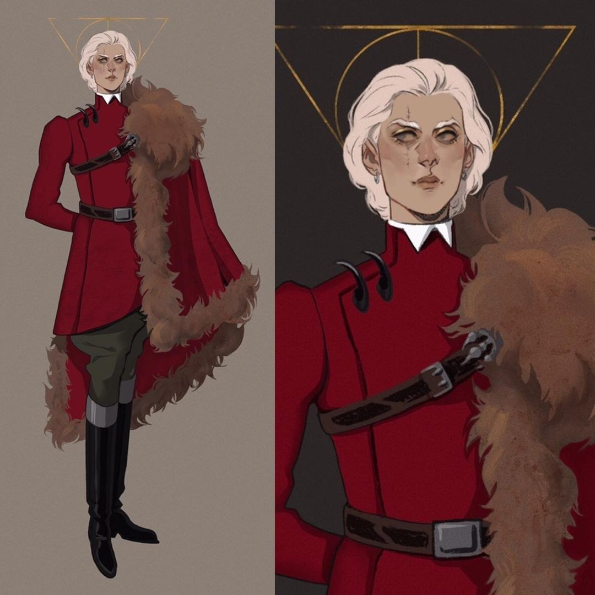

Thibault Le Lambert
| Thibault Le Lambert | Imperial Lieutenant of the Holy Sea, and co-leader of the six beside his elder brother Edward · Human, House Lambert of the Hallenfeld branch · the Holy Sea of Alabaster · as of Alabaster in the first snow, about 732 IC |
| Epithet | the White Fang Croc Blanc on the Stair, Dens Albus in the Court’s Latin; the camps say it for the one white flash men see before they fall, and the Yukari, who keep a record of everything, enter it as the only name of his they will write down |
| Concept | He answers your blow before you have decided to throw it. |
| Stat line | Stage XII Emanation · Grandmaster (Flawless) Level 420 · Refined, in Residual Strain · Last Word Body XII Mastered, V · Spirit XI Walked 35%, IV · Lenses: home + 2 |
| Combat grammar | Blade; the Sallowgate Answer carried past the point where it needs a question |
| Aura | color: Aurevane’s hard-edged white-blue, bleached nearly to white by Emanation, with the blue left only at the core of it · texture: a lamp’s beam in a dark room, with no soft part anywhere on it · shape: close on the skin like heat-haze at rest; in his Domain a ring and a triangle of hard light stand behind his head like the Court’s painted saints · feel: the smell of snow-light, one clean high tone like a wet finger on a glass rim, and every face in the room lit without mercy, so that men see their own wrinkles and the lamps burn white |
| How he moves | he stands open and still, hands low, the gray sword held in a loose low guard with the point toward your knee, weight on the outside edges of the feet the Sallowgate way; he never steps first and never feints; the blade moves on your will, which he reads before your shoulder has committed, in one cut with no second, rising from the low guard along the line your blow would have taken into the throat, the wrist or the eye; he gives ground only by the width you meant to take; hurt, he goes stiller and counts under his breath, as every Lambert does |
| Stack | sustainable means of 525 and 512.5 in Dexterity and Gnosis (Reflex and Forecast 950, Economy 880, Analysis 800, Finesse 760), 212.5 in Resilience, 162.5 to 175 in Vitality, Ardency and Dominion · cap two steps on the hidden scale over the sustainable figure (to 1,500 on those five) · layers: ONE BEFORE’s step of Reflex against a will; BLANC DE NEIGE and LA CHAIRE together, or LA MÂCHOIRE alone, either filling the cap |
| Bonded weapon | AMEN, a narrow gray Lambert sword with a black cord knot at the pommel, Legendary, Grade S |
| Kit | a long crimson frock coat with a high collar closed by two blackened wolf’s fangs, the white points of a cleric’s collar showing above it, a great mantle of tawny wolf fur thrown over the left shoulder and trailing to the boot, olive riding breeches, tall black boots cuffed in steel-gray, a dark baldric with a silver claw buckle, small silver rings in both ears, and the piece people talk about first: AMEN at his hip, Legendary, which has never been drawn twice in one fight |
| Voice | ”You had not yet decided to draw, my lord. I have already answered.” · speaker type: a struck-off priest who speaks only in responses, with a cleric’s Latin and a Lambert’s numbers |
| Next gate | Stage XIII, Principality · Catalyst: the Continuum enters as law the thing he embodies, that no question raised against him goes unanswered, after a lifetime in which it never once has · holds at Level 401, which his 420 already passes: only the Catalyst is wanting, and Residual Strain builds in him until it is met |
I. Identity
| Field | Value |
|---|---|
| Full Name | Thibault Le Lambert |
| Court form | Theobaldus Lambertus, Locumtenens Imperii, as the Alabaster Court enters him |
| Pronunciation | tee-BOH luh LAHM-bair |
| Alias / Title | the White Fang · Imperial Lieutenant of the Holy Sea · Co-Lieutenant of the Six · once Father Thibault, Veil-Saint of Rimward |
Also Known As
| Name | Who says it |
|---|---|
| Croc Blanc | the Stair, the march levies and every child at Sallowgate, in the house’s French |
| Dens Albus | the Alabaster Court, which enters every name in Latin whether the owner likes it or not |
| Father Thibault | the dying of Rimward, who still send for him in plague years and still call him that |
| the Hole in the Roll | the Court’s clerks, behind his back, for the page cut from the ordination roll |
| the Unasked | the clerics of the Upper Stair, unkindly, because nobody has ever heard him ask for anything |
| Field | Value |
|---|---|
| Race / Lineage | Human · House Lambert, the Hallenfeld branch, the house’s northern cadets · the Computus in the blood, a read of the will with no faculty behind it; the Lambert lean to Dexterity and Gnosis; no eye and no grip, as with every Lambert · gave up Furniture the morning he woke |
| Age | Thirty-seven |
| Realm / Faction | The Holy Sea of Alabaster · one of the six Imperial Lieutenants, the locumtenentes imperii, who hold the Palatine’s right to command force in his place because a Palatine may not carry a sword · co-leader of the six with his brother Edward, the Count |
| School and sect rank | the Sallowgate yard, where every Lambert child learns the Answer on a wooden sword · the Veil-Saints of Rimward, ordained at twenty and struck from the roll at thirty · the Accord files him Grandmaster on the fighting table |
Renown
| Among | What they say of him |
|---|---|
| the public | that the White Fang has never been seen to strike first and has never needed a second cut, and that the men he kills do not walk afterward |
| the army | the Hammerford companies will sign against anyone in the South except him, and write that clause into the contract |
| the great lines | the Zettari have a price on him in the sands, the Moto call him Shirokiba, the white fang, and say it with a hand on the hilt, and the Yukari have entered him in their record under the epithet alone |
| the Church | the clerics of the Sea pray for the men he is sent against, and do not pray for him, because he was struck and the roll has a hole in it |
| Sallowgate | the house says no Lambert has passed the tenth Stage, and it says this to his face, and he lets it |
| Field | Value |
|---|---|
| Catalyst Event | Woke at twenty-two over a deathbed in the plague year after the continents split, at Rimward, when the count he was keeping of a dying man’s last breaths came to its end, and for the first time in his life the Computus had somewhere else to go |
| Refusal | He will not strike a man who has not turned his will on him or on anyone in his charge, and he could not if he tried |
| Conviction | Every man who turns his will on another has already asked his question, and deserves the true answer |
| Arc kind | flat; he does not change, and the South changes around the one man in it who cannot be asked twice |
II. Soul Architecture
| Field | Value |
|---|---|
| Level | 420; it holds Emanation (320) and would hold Principality (401), and past 400 with no Catalyst met, Residual Strain builds in him |
| Temperance Stage | XII, Emanation · Grandmaster |
| Path | Body XII Mastered · Spirit XI Walked 35% · Body is the sword, the blood’s read and the Answer that no longer waits for its question · Spirit is the Veil-Saint’s road, the sacrament he still gives to the men he kills, and the Path behind: its gates open a Stage late and its ladder runs a rung below the Body’s |
| Mastery | Body V, Radiant: the lead, at the roof of his Stage · Spirit IV, Shepherd: Walked a rung behind the lead; the rung a Veil-Saint works on when he walks a soul to the edge of the Veil · Fate: not walked, and nothing reads there; no grip by blood or blessing, and an oath of ordination that was struck before it could become one |
| η | 1.00 through the Shell, at Body V; loss negligible through the Core, at Spirit IV; almost nothing he sends is lost on the road |
| Lenses | home Aurevane + 2 held (Judicium, Thaloré) |
| Soul Crystal | Flawless |
| Crystal State | Refined, and in Residual Strain |
| Class | Last Word · the soul’s name for a man whose answer ends the matter · gives: the skill Reading a Will at the roof of his Stage, and the right of the Answer to move before it is asked · shapes: his points fall to the hand and the eye, and almost none to the pull · evolved from: Auditor, offered at Glory, then Riposte at Refraction, then Last Word at Transcendence, each time his Body Mastery rose |
III. Wellspring Harmonizations
| Wellspring | Folk name | Kind | Depth | Got from | What it bends in him | Note |
|---|---|---|---|---|---|---|
| Aurevane | the True Light | Medium | governing | the snowfields above the white shelf, where the old Kōkan seat stands in the frost and the light comes off the snow with nothing between it and the eye; touched there at Stage IV, taken for good in a winter alone at Stage VIII | what he sends arrives exactly as meant, every ounce of the cut on the span of skin it was meant for, and what he sees grows truer | Omnis · sublimation · the light that does not flatter, which is why he is the easiest man on any field to find |
| Judicium | the Scale | Wild | deep | the Lambert bench, in the blood before he could walk | he tells a will apart from the feint wrapped around it, so the Answer goes to the true intent and never to the show | Dazkar · separation |
| Thaloré | the Heavy Heart | Spirit | working | the Sounding Walk, and the Rimward deathbeds of two plague years and every plague year since | a dying soul takes the shape of what holds it, and for the length of the crossing what holds it is him | Sylorin · dissolution · it wants drowned and grieving ground and Aurevane wants dry clear air, so his two lenses never want the same field |
IV. Primary Stats
| Primary | Total | Mean |
|---|---|---|
| Vitality | 1,300 | 162.5 |
| Ardency | 1,400 | 175 |
| Gnosis | 4,100 | 512.5 |
| Dexterity | 4,200 | 525 |
| Harmonics | 380 | 47.5 |
| Resilience | 1,700 | 212.5 |
| Tempering | 600 | 75 |
| Dominion (seven, Throne apart) | 1,200 | 171.43 |
| Throne | not opened | · |
| Field | Value |
|---|---|
| Pool | 14,880 |
| Spent | 14,880 |
| Unspent | 0 |
V. Sub-Stats
| Primary | ||||||||
|---|---|---|---|---|---|---|---|---|
| Vitality | Fortitude 330 | Absorption 120 | Constitution 260 | Hemostasis 120 | Regeneration 90 | Filtration 60 | Tolerance 170 | Threshold 150 |
| Ardency | Flux 200 | Alacrity 260 | Depth 80 | Penetration 480 | Compression 220 | Cascade 0 | Overchannel 0 | Density 160 |
| Gnosis | Perception 640 | Acuity 380 | Forecast 950 | Fluency 120 | Retention 640 | Analysis 800 | Cognition 180 | Vigilance 390 |
| Dexterity | Celerity 470 | Reflex 950 | Finesse 760 | Economy 880 | Evasion 640 | Grapple 120 | Feint 40 | Sequence 340 |
| Harmonics | Attunement 80 | Projection 0 | Breadth 0 | Stability 140 | Empathy 120 | Synergy 0 | Axis 40 | Suppression 0 |
| Resilience | Integrity 360 | Ward 240 | Persistence 120 | Anchoring 200 | Fortification 60 | Hardening 40 | Oath 560 | Continuity 120 |
| Tempering | Clarity 240 | Overflow 0 | Maturity 140 | Coherence 160 | Yield 60 | Ceiling 0 | Capacity 0 | Longevity 0 |
| Dominion | Radius 90 | Sovereignty 220 | Sense 260 | Gravity 150 | Pressure 180 | Command 300 | Fate 0 |
Field
Note
Value
Everything is in the eye and the hand: Reflex and Forecast at the roof of the Stage, Economy, Finesse and Analysis beside them, and Penetration enough to put an S-Grade edge through a Grandmaster’s coat. He has no Feint at all, because a Lambert is never taught to lie with the body, and almost no Harmonics, because the count is no help to a lens. His body is a Lambert’s: a Vitality of 1,300 at Stage XII means that the blow he does not answer will hurt him the way it would hurt any man of his Stage who never trained to take one.
VI. Force of Hand
| Measure | Figure | Feats | Carried by | Note |
|---|---|---|---|---|
| Strike Force | Penetration 480 | opened a Zettari Sand-Warden’s worked mail and the man inside it from collarbone to hip in one cut at Ashbury ford | Penetration 480, AMEN | Aurevane puts the whole of it on the span he meant, so it reads higher on a throat than on a wall |
| Lifting | Fortitude 330 | carried a dying man up the eleven hundred steps of the Stair in a plague year | Fortitude 330, Grapple 120 | ordinary for his Stage, and he has never needed more |
| Travel speed | Celerity 470 | crossed the width of a skirmish line between two of an enemy’s heartbeats | Celerity 470 | he is early, and Grandmasters mistake it for speed |
| Reaction | Reflex 950 | answered a Moto’s draw before the Moto had finished deciding to draw | Reflex 950, ONE BEFORE | one step higher against any blow with a will behind it |
| Durability | Fortitude 330 | took a Zettari spear-butt across the face at Ashbury ford, with four ribs broken under it, and finished the fight | Fortitude 330, Constitution 260 | low on the slate for a Grandmaster; the Lamberts take hits like the people they are |
VII. Aether Flow
| Measure | Figure | Note |
|---|---|---|
| EU Reserve | 632,761,432 EU | by the law of reserves at Level 420, about 6.33 × 10⁸ |
| Held as | Charge 65% · Essence 35% | the Body half packed in the Shell, the Spirit half refined in the Core for the sacrament |
| Flux Density | 6.00 × 10⁶ EU/g | |
| AU/s | 6.00 × 10⁶ | Flux Density times a yield of 1.00 |
| From full | empties in 105 seconds at full output, Charge Starvation at about 95 | he has never been seen at full output; a fight with him is usually two cuts long |
| Recovery | fast on dry, clear, snow-lit ground and on metal-veined rock; slow in fog and in iron-walled rooms | Aurevane’s ground |
Spending tells
| Reserve left | What shows |
|---|---|
| half | the breath shortens, the white thins at its edges, and snow melts in a ring where he stands |
| a quarter | steam rises off the crimson coat, the thumb that counts on his right hand begins to tremble, and the color goes out of his eyes until they are white |
| a tenth | the aura flickers like a lamp in a draft, ONE BEFORE stutters, and his answer comes a hair late for the first time in his life |
| past that | the skin on the backs of his hands splits in fine lines, the glare comes out through his eyes and they bleed white light, and the Shell cracks like ice on a step |
VIII. Traits
Full accounts: Thibault Le Lambert — Abilities
Every Trait reads at his lead Mastery, Body V.
| Trait | Kind | Source | Path and Form | Gates | What it does | Limit | Tell | Cost | Counter | Numbers |
|---|---|---|---|---|---|---|---|---|---|---|
| ONE BEFORE | Inherited | Inherited | Body · the Lambert inheritance · Read | none | His answer starts a hair before your blow does, every time. | slower against anything with no will in it | he moves a hair before you do | nothing; no reserve | a blow with no intent behind it | Reflex one step high against a blow with a will behind it |
| AVANT LA QUESTION · Before the Question | Primary | Lived | Body · the Lambert inheritance, Aurevane · Read | Refraction, where it woke; Emanation made it the law of the ground around him | Near him a will is counted the moment it forms, before the body has begun to obey it, so his answer can move before your blow has been decided. | a will must form; he cannot read what nobody means, and he cannot read past a will to the man who sent it | his eyes go pale and still and settle on the place on you where the decision will come out | nothing in reserve; it took from him the power to ask, at Refraction, and has not given it back | the mule, the falling wall, the dead man’s trap, the working that runs by itself, and the man who truly comes to him with nothing in his hands | inside about thirty paces, any will turned on him or on anyone in his charge |
| LA DERNIÈRE ONCTION · the Last Unction | Secondary | Lived | Spirit · Thaloré · Rite | Spirit gates, a Stage late | Every man he kills crosses the Veil whole, in his shape, with no loose edge: no ghost, no walking dead, no dying curse, and nothing for an art that feeds on the dead to take hold of. | only those he kills himself, and only if he speaks the commendation before the body is cold | Proficiscere, anima, “go forth, soul”, under his breath, with two fingers on the dead man’s brow | the full weight of each soul for the length of the crossing; a bad death presses on the Core, and if his footing gives under a heavy one, it goes down through him instead of across | a soul taken before he can reach it; a Domain or a ground that holds the dead | about one tenth of one percent of his reserve, near 630,000 EU, for each soul he walks across |
IX. Skills and Abilities
Full accounts: Thibault Le Lambert — Abilities
Skills
| Skill | Cues / mechanics | Learned where | Priced by (Sub-Stats) | Mark | Rank |
|---|---|---|---|---|---|
| Sallowgate Sword | the low loose guard, the turn of the wrist, one cut along the line the other man’s blow would have taken | the yard at Sallowgate on a wooden copy of the house balance, and Ashbury ford | Reflex, Finesse, Economy | Mastered | Grandmaster |
| Reading a Will | the Computus at its height: the will counted as it forms, before the shoulder or the breath | the blood, and what the Class made of it | Forecast, Analysis | Mastered | Grandmaster |
| Counting a Field | men, horses, remounts and days of grain at a look; never “about” | the bench-house at Hallenfeld, beside his father | Analysis, Retention | Drilled | Master |
| The Last Rites | the commendation of the Veil-Saints over the dying, said in the old Latin, so the soul crosses without fragmenting | the Veil-Saints of Rimward, two plague years and every one since | Empathy, Integrity | Mastered | Expert |
| Court Latin | the Court’s forms and the liturgy’s responses, word-perfect | the seminary under the Archive | Fluency | Mastered | Expert |
| Riding | a march horse in snow and on the Stair | the land marches | Celerity, Economy | Drilled | Adept |
| Command of Lieutenants | orders given as answers to questions his captains have not yet asked | the six, since their charter | Command | Drilled | Adept |
Techniques
| Technique | Kind | Mark | Source | Path and Form | Gates | What it does | Limit | Tell | Cost | Counter | Numbers |
|---|---|---|---|---|---|---|---|---|---|---|---|
| LA RÉPONSE BLANCHE · the White Answer | Signature Art | Mastered | Lived | Body · Aurevane on the Lambert inheritance · Strike | Emanation for its full reach | the power to answer an attack before it has been decided, with one cut that arrives exactly where it was meant | an answer needs a question: a man who means him no harm, or a thing with no will in it, gives the art nothing to answer | the white flash, one clean high tone, and nothing from him before it | from about four tenths of one percent of his reserve for a cut at an eye to six percent for a field; the standing price is that he can no longer ask for anything | no will turned on him or his charge; a Fate fighter who removes what the cut depends on; a Stage gap too wide for knowing to help | see the moves below |
| CROC BLANC! · White Fang! | Signature Technique | Mastered | Lived | Body · Aurevane · Strike | none | The cut he is named for: when your will to strike him forms, the cut has already left the low guard along the line your blow would have taken and gone into the throat. | one man, one will, one cut; it does not answer a second man in the same heartbeat | the white flash men describe as a fang, seen and gone | about 0.7% of his reserve, near 4.4 million EU, spent in under a second; S-Grade on the edge | a blow with no will in it: the mule, the trap, the bolt on a timed order; or a Fate fighter who removes what the cut depends on before it leaves the guard | about 140 from a full reserve |
| À L’ŒIL! · To the Eye! | Technique | Mastered | Lived | Body · Aurevane, Judicium · Strike | none | To the blood a reading is a will turned on him. A seer who looks into his next move sees only his own blow coming back, and while he is still looking the point goes into the eye that read him. | only an eye that reads him, and only from within the reach of the blade or a step | he meets the reader’s eye before the reader has finished looking | about 0.4% of his reserve, near 2.5 million EU | look away; send someone else to read him; read him from out of reach | the cut that killed the Epoch lines’ seers |
| LA DÎME! · The Tithe! | Technique | Drilled | Lived | Body · Aurevane · Strike | Emanation | Against a charge or a volley, he answers the first tenth of the wills turned on him, in the order they formed, before the rest have finished deciding. | a tenth and no more; the other nine are left alive to see it | he says “la dîme” quietly, as a priest says it at the collection | about 6% of his reserve, near 38 million EU, over about six seconds, one long breath | a charge of men who do not mean it, conscripts driven from behind; crossbows loosed on a timed order, with no will in the loosing | rarely more than once in a fight |
Releases
| Release | Kind | Mark | Source | Path and Form | Gates | What it does | Limit | Tell | Cost | Counter | Numbers |
|---|---|---|---|---|---|---|---|---|---|---|---|
| BLANC DE NEIGE · Snow-White | First Release | Mastered | Lived | Body · Aurevane · Shape | Stage IV | ”Blanc.” The white of his hair goes hard and lit at the roots, the aura comes up hard-edged and white over the skin, and his Reflex and Forecast read a step high. | the light shows him to every crossbow on the wall | his hair lights from the roots outward, like frost on a pane at dawn | about 1.2 million EU a second, near nine minutes from a full reserve | Tenebra; fog; any room caged in iron | +1 step Reflex and Forecast |
| LA CHAIRE · the Pulpit | Second Release | Mastered | Lived | Body · Aurevane · Shape | Stage VII | ”En chaire.” The ring and the triangle of hard light stand behind his head, AMEN’s edge goes white, and LE RÉPONS opens around him; at Refraction it only lit the Domain’s seed. With the First under it he stands two steps over his line. | it fills the cap with the First and leaves no room for anything else | the halo behind his head | about 2.6 million EU a second; with the First under it, 3.8 million, near two minutes and three quarters from a full reserve | anything that breaks his Domain | +2 steps with the First under it |
| LA MÂCHOIRE · the Jaw | Third Release | Drilled | Lived | Body · Aurevane, Judicium · Strike | Stage IX | ”La mâchoire.” The white closes round him in the shape of a jaw, and AMEN’s edge is the lower teeth: every will turned on him within a sword’s reach is answered from two sides at once. | it fills the two-step cap by itself and leaves nothing for the rest | the light takes the shape of teeth | about 4 million EU a second, near two and a half minutes from a full reserve | a man who comes in with no will at all; a blow from outside the jaw’s reach | used three times on record |
| LE RÉPONS · the Responsory · Responsorium | Domain | Mastered | Lived | Body · Aurevane · Shape | Stage VIII; at Emanation it stands without upkeep | Its law: every question raised in this place is answered, and he is the answer. Inside it no will against him or his charge goes uncounted, at any distance, and no blow struck in anger reaches anyone before his answer reaches its striker. | a will must form inside it; a working that runs by itself passes through | the ground goes white as the Walk under a true oath, and the light in the place comes from no lamp | opened by LA CHAIRE; once open, it holds itself | another Domain with a law that refuses his; a Fate claim on the ground; a Zenith | about a hundred paces across, on open ground |
X. Spirit Axes
| Person | Bond | Axis weight | What flows across it | Note |
|---|---|---|---|---|
| Edward Lambert | elder brother, the Count, co-leader of the six | heaviest | Edward asks and Thibault answers; it has worked that way since they were boys at Hallenfeld | the only man alive who can begin something for him |
| Osbert Lambert | father, the tariff-master | heavy | the count; Osbert’s last figure in the Moto hall was “two children”, and Thibault was the second of them | |
| Mizuyi Moto | the hostage in his keeping at Sum-gol | rising | hate on his side; on hers, his given name and the count of the Kōkan sold at Rimward | she read that he cannot ask, and turned her will on him once; he let her go |
| Léonard Lambert | kinsman, Warlord of the Lamberts | light | courtesy, and an argument about which of them the Sea’s sword belongs to | Léonard outranks him at the table; Thibault outranks him in the field |
| the Palatine | whom he serves | light | the imperium, held in his place | Thibault cannot pray for him and says so |
XI. Resistances
| Against | Resistance | Carried by | Note |
|---|---|---|---|
| Foresight and reading eyes | very high | AVANT LA QUESTION, À L’ŒIL! | his cut carries no will of its own, so an eye that reads intent sees nothing coming from him, and the reading itself is a will he answers |
| Feints | very high | Judicium, Analysis 800 | he answers the will under the show and never the show |
| Lies about what happened | high | the Computus | a Fate fighter can move the odds and still cannot move the true count |
| Spirit workings past the Shell | moderate | Ward 240, Integrity 360 | a working that goes past the Shell does not move like a shoulder |
| Anything with no will | none | · | the mule, the wall, the trap, the panicked horse; it is how Lamberts die |
| Taking a hit | low for his Stage | Vitality 1,300 | he has lived by never being hit |
XII. Physical Description
| Feature | Description |
|---|---|
| Build | tall and long-boned, narrow through the waist and broad enough at the shoulder to carry a fur mantle like a coat, with the stillness in the frame that the Lamberts are known for |
| Hair | white, the Lambert gold bleached out of it by Emanation and Aurevane until it is the color of the shelf in winter sun; thick, worn swept back from the brow in loose waves to the collar, falling forward over one eye when he bends |
| Skin | pale, with the cold reddening it across the cheekbones and the nose |
| Face and eyes | a long face with high cheekbones and hollows under them, heavy-lidded and shadowed under the eyes as if he had not slept, a straight nose and a thin unsmiling mouth; the eyes are a pale gray-blue, and go paler and still when he reads a man; when he spends hard they go white, iris and all, which is the glare taking the color first |
| Marks and scars | a scar from the left brow down across the bridge of the nose to the right cheek, from a Zettari spear-butt at Ashbury ford, with a second nick across the left eyebrow; small silver rings in both ears |
| Hands | long and fine, the right thumb never quite still against the pad of the forefinger, counting |
| The field coat | a long crimson frock coat of fine wool, fitted at the waist and full in the skirt, puffed at the upper sleeve, closed at the high collar by two wolf’s fangs blackened in lacquer; above it the starched white points of a cleric’s collar, which he still wears; a dark leather baldric across the chest with a silver claw buckle; a brown belt with a square steel buckle; olive riding breeches; tall black boots with steel-gray cuffs at the knee |
| The wolf mantle | a great mantle of tawny wolf fur over the left shoulder, long enough to trail to the boots and edge the coat’s skirt all the way round |
| Court dress | a deep red coat embroidered over the breast with red poppies, the Veil-Saints’ flower for the dead, a black sash across the body, rings on several fingers, and the fur thrown back over both shoulders |
| Winter dress | a black high-collared tunic closed with gilt buttons stamped with the balance, under a pale fur-collared greatcoat, in which he walks the cloister of the Archive in the snow |
XIII. Psychology
| Field | Value |
|---|---|
| Core Wound | He lost the power to ask, and a priest who cannot ask cannot pray |
| Flaw | He begins nothing; he waits for the world to put its question, and the world has learned to |
| Desire | To be asked one true question he cannot answer |
| Strength | He has never once been wrong about what a man meant |
| Loop | answer, and wait to be asked again |
| Foil | Edward, who asks |
| Stress Default | stiller, quieter, counting under his breath |
Voice block
| Field | Value |
|---|---|
| Speaker type | a struck-off priest who speaks only in responses, with a cleric’s Latin and a Lambert’s numbers |
| Chant tongue | the old Latin of the Veil-Saints’ rite; his move calls in Sallowgate French |
| Lying tell | none, because he does not lie; when he will not answer, he says et cum spiritu tuo and stops |
| Notices first | what you have already decided, and where on you it will come out |
| Speech length | short; every sentence is a reply |
| Wit | dry, and only by accident, because he answers what you meant and not what you said |
| House words and sayings | Count True · the liturgy’s responses, Amen, et cum spiritu tuo, Deo gratias, said where another man would curse |
| Accent features | Sallowgate French in the mouth: oui, mademoiselle, voilà, gardien, retiens bien, the French word set beside its English meaning in the same breath |
| Contractions | never |
| Never says | a question; he has not asked one in thirteen years |
| Stress shift | he gives figures instead of words |
| Grief shift | he says the commendation |
| Sample line | ”You had not yet decided to draw, my lord. I have already answered.” |
XIV. Equipment
| Item | What it is | Grade | Rarity | Rung | Bonded | Multipliers | Shell draw |
|---|---|---|---|---|---|---|---|
| AMEN | a narrow Lambert long sword | S | Legendary | Kingsarm | yes; it carries LA MÂCHOIRE’s lower teeth and whitens with LA CHAIRE | Penetration ×1.25 · Finesse ×1.1 | steady |
| The crimson coat | long field frock coat, kermes-dyed wool | plain | Rare | · | no | none | none |
| The wolf mantle | tawny wolf fur, from the frost line | plain | Rare | · | no | none | none |
| The cleric’s collar | white linen points, starched | plain | Common | · | no | none | none |
| The poppy coat | court coat, red on red | plain | Very Rare | · | no | none | none |
| Item | Item Tier and stamp | Look | Maker’s mark | Wear and repairs | How it is shown off | What people say | Mass, balance and what it beats | Price |
|---|---|---|---|---|---|---|---|---|
| AMEN | Storied | gray steel with a plain cross and a flat disk pommel like the house sword’s, narrower in the blade, a black cord tied at the pommel in the Veil-Saints’ knot, no gold on it anywhere | the balance under the guard, and under that a small cross, the only Lambert sword with both | the cord is retied every year; the blade has never needed the stone | it is not; he never draws it twice in one fight, and most men see it once | that it is named for the last word of every prayer, and that he named it the year he stopped being able to say one | near 1.2 kilograms, balanced close to the guard for the rising cut; beats plate through Found | not for sale; the Moto offered once, by letter, and he answered |
| The crimson coat | Plain | as the Physical Description gives it | a Rimward tailor’s | mended at the hem and once at the left sleeve, after Ashbury | worn where the Hammerford companies can see him | that a priest has no business in red; he answers that it hides the blood | · | about forty gold |
| The wolf mantle | Plain | tawny gray-brown, long-haired, the pelts of the gray wolves that come down off the frost line into the land marches when the snow lies late | none | patched with a second pelt at the trailing edge | thrown over one shoulder, never both, so the sword arm is clear | that he killed the pack himself the winter of his first Stage; he has not said | · | not sold |
| The cleric’s collar | Plain | the starched white points of a Veil-Saint’s collar | the Rimward chapter’s | replaced as they fray | under the crimson, every day | the Court has asked him to stop wearing it and been answered | · | a copper |
| The poppy coat | Plain | deep red, the breast worked with red poppies, a black sash across it | an Alabaster embroiderer | none; worn twice a year | at the Court, and at the Reading of the List | that he wears the flower of the dead to court on purpose | · | about ninety gold |
XV. Temperance Record
Level log
| Levels | Where they were earned |
|---|---|
| 1 to 60 | unwoken, at Hallenfeld and in the seminary: the Computus entire, a clerk’s body, and the first Rimward plague year |
| 60 to 200 | woken at twenty-two, in the plague year after the continents split, then the ruins: Lambert officers sent out with the Hammerford companies, and a Veil-Saint sent with them |
| 200 to 360 | the feuds of the ruins across the South: Zettari at Ashbury ford and on the Yukari roads, Moto under Mahuo banners, Yukari on the cedar road |
| 360 to 420 | as the Sea’s sword: the six chartered, and the men who came to see whether the White Fang was real |
Stage ledger
| Stage | Name | Catalyst | Bought | The story in a line |
|---|---|---|---|---|
| I to IV | Murmuring to Flourishing | crisis | no | woke over a deathbed and climbed the first four in two years of plague and the ruins, which the house calls indecent |
| V and VI | Splintering, Glory | crisis | no | four ribs and his face broken at Ashbury ford and rebuilt; the class Auditor offered at Glory |
| VII | Refraction | crisis | no | the first time his answer moved before the question, against a Moto of the Akagane line; the Domain’s seed flickered, the class became Riposte, and he lost the power to ask |
| VIII | Transcendence | seclusion | no | a winter alone in the snow above the shelf, where he took Aurevane for good; the first true Domain, and the class Last Word |
| IX and X | Invocation, Realization | crisis | no | the worst years of the ruins; the Third Release found in a fight with two Zettari at once |
| XI | Dissonance | tribulation | no | the Shell cracked the year the roll was cut, and stayed cracked for three years |
| XII | Emanation | seclusion | no | the Shell rebuilt denser at the breaks; nobody on the Stair has thrown a first punch since, in case he is in the street |
XVI. Fracture Log
| Event | Layer | Status | What it left |
|---|---|---|---|
| The ordination struck | Core | processed | the hole in the roll |
| The asking lost | Core | open | he cannot begin a question, a petition or a prayer; at Sum-gol one began in him for the first time, and did not finish |
| The glare | Shell | open | his eyes go white when he spends hard, and bright days hurt |
| Dissonance | Shell | reinforced | the Shell rebuilt thicker at every break, which is why the Charge sits in it without a band |
Lore
Full account: Thibault Le Lambert — Lore
Ties
| Person | Who they are to him |
|---|---|
| Edward Lambert | his elder brother, the Count, co-leader of the six |
| Osbert Lambert | his father, the tariff-master, of the Hallenfeld branch |
| Mizuyi Moto | the hostage he keeps at Sum-gol for the southern alliance |
| Léonard Lambert | Warlord of the Lamberts, his kinsman, who sits above him at the table and below him in the field |
| the Palatine of the Holy Sea | whose imperium he holds and for whom he cannot pray |
| the other four Imperial Lieutenants | the six, of whom he and Edward are the two who lead |
| Naiser Yukari | half Sallowgate by his mother, and the head of a house whose dead Thibault has walked across the Veil |